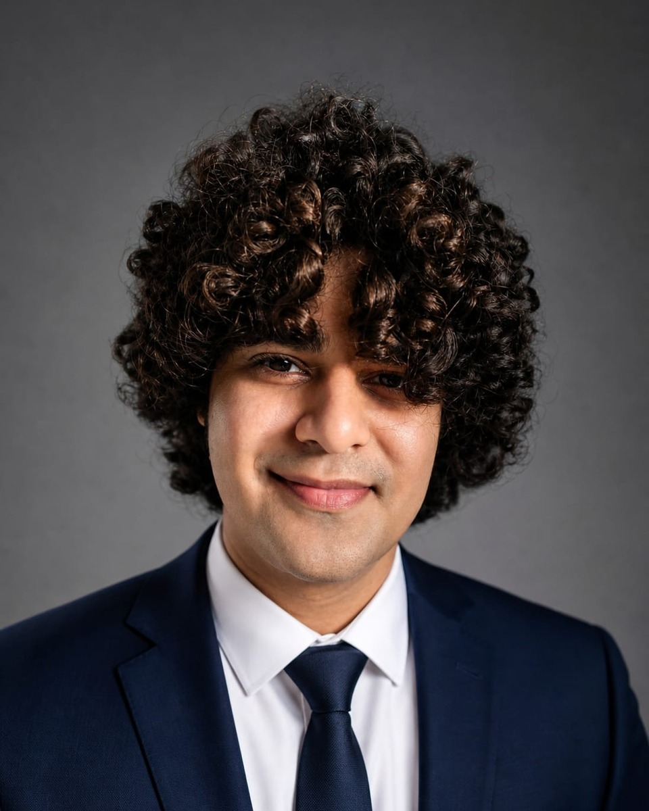

Research
Technical AI safety
Mechanistic interpretability · LLM behavior · Multi-agent safety
Projects span behavioral evaluation, internal representation analysis, causal intervention, preference alignment, and interacting-agent systems.
My work sits at the intersection of machine learning, model behavior, internal computation, and the social dynamics that arise when AI systems interact.

I studied Computer Science and Social Sciences at IIIT-Delhi. That combination made questions about intelligent systems feel inseparable from questions about behavior, incentives, institutions, and the people affected by them. Behavioral science, behavioral economics, and decision making have remained continuing interests rather than merely courses on a transcript.
Research in machine learning and neuroscience added another lens: observable behavior matters, but understanding a system often requires studying the processes underneath it. I later spent over a year building production deep-learning systems at Thrifty AI across language models, speech, retrieval, agentic pipelines, and real-time generation.
My current work brings those strands together in technical AI safety. I use mechanistic interpretability to study how model behavior relates to internal computation, while increasingly extending this work to social intelligence and safety in multi-agent systems.
The long-term aim is not only to detect misalignment, but to develop interventions and oversight methods grounded in a clearer understanding of how increasingly capable systems compute, interact, and adapt.
I work as a Research Assistant in AI safety and alignment, advised by Prof. Amitava Das at APPCAIR, BITS Pilani Goa. I also collaborate with Prof. Amit Sheth through the Indian AI Research Organization and receive independent research mentorship from Aman Chadha (Google DeepMind), Vinija Jain (Google), and Amit Dhanda (Amazon).
Projects span behavioral evaluation, internal representation analysis, causal intervention, preference alignment, and interacting-agent systems.
Built and optimized deployed systems involving LLMs, retrieval, speech, agents, and real-time generative pipelines.
Received three Dean's Awards in the same year, a distinction previously achieved by only one other IIIT-Delhi student.